Foto galerija
Pogledajte Štedim iz svih uglova
Od skijaških staza i planinskih vrhova do infrastrukture i smještaja — istražite Štedim kroz fotografije. Kliknite na fotografiju za uvećani prikaz.

Skijaši na Hajli
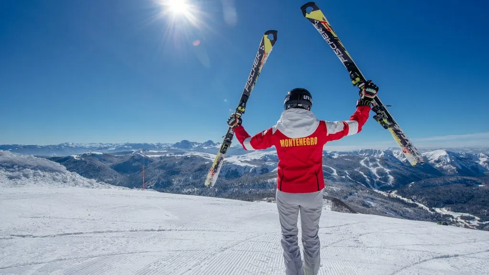
Spust niz padinu
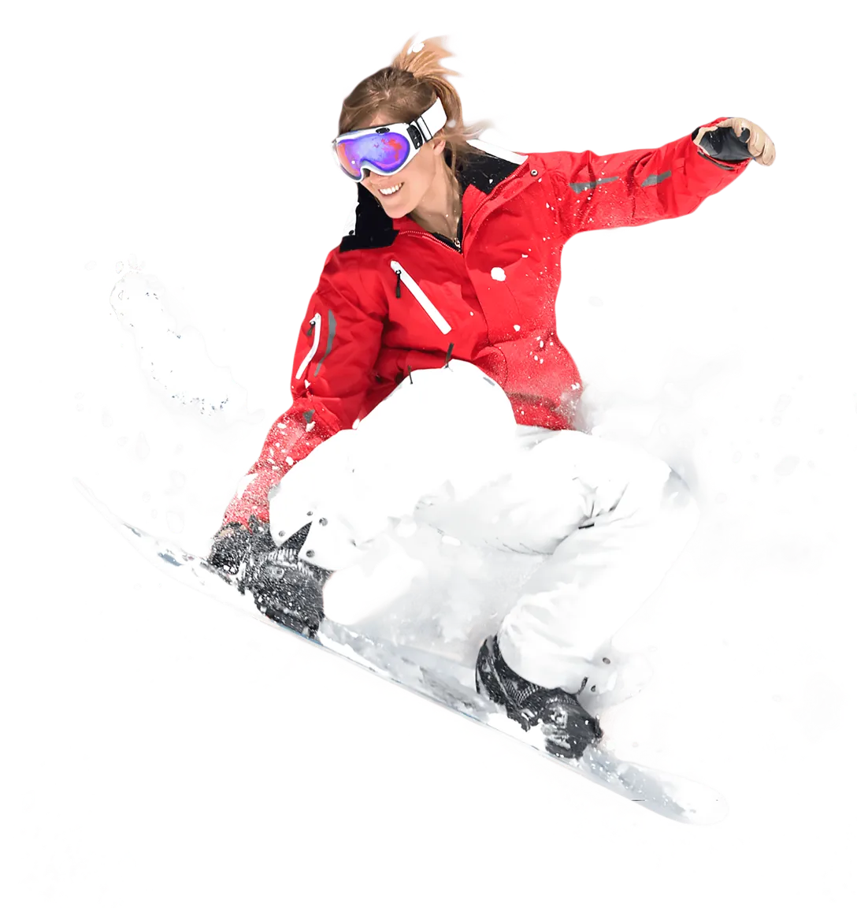
Snowboard skok
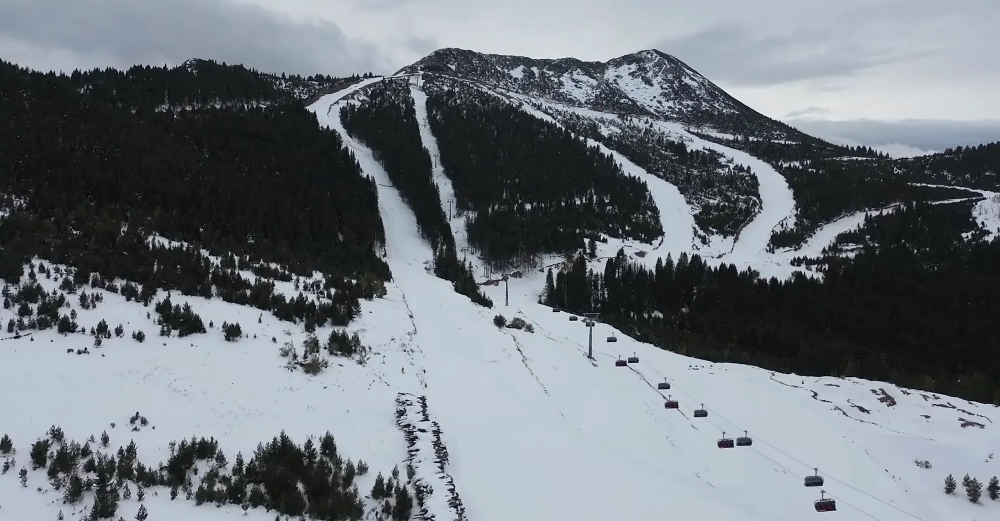
Skijaška staza
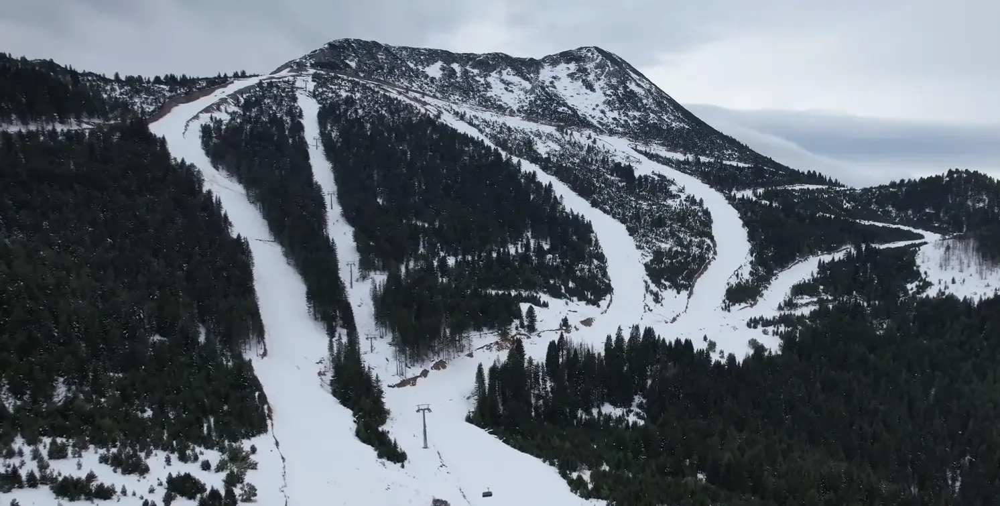
Pogled sa staze
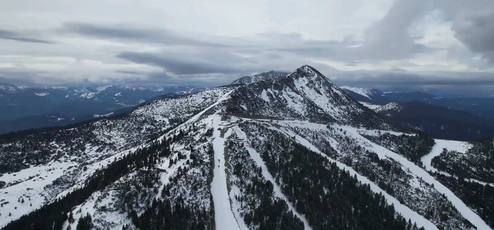
Mreža staza
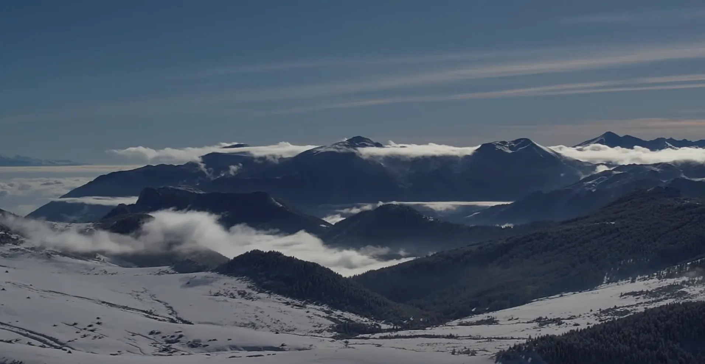
Pogled na Prokletije
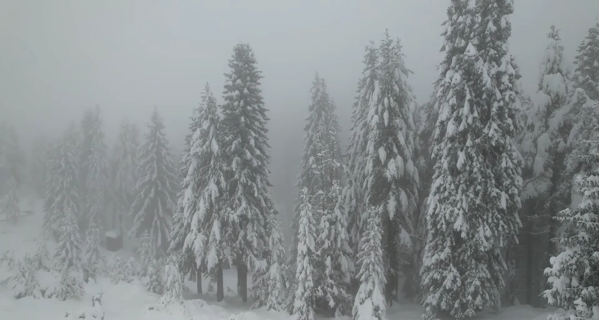
Borova šuma
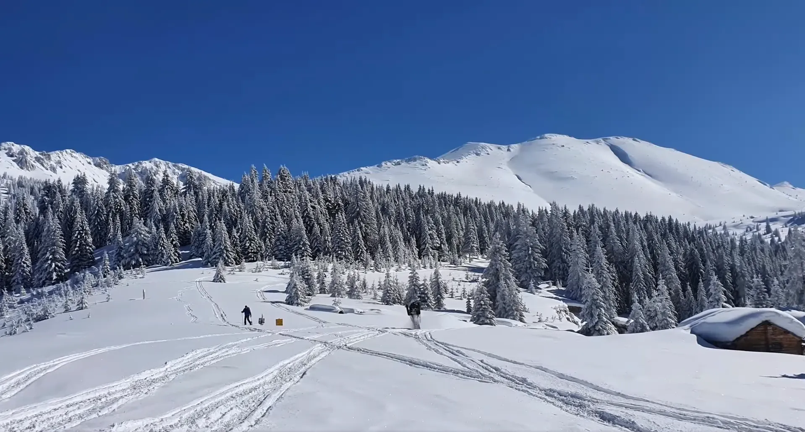
Štedim u zimskom ruhu
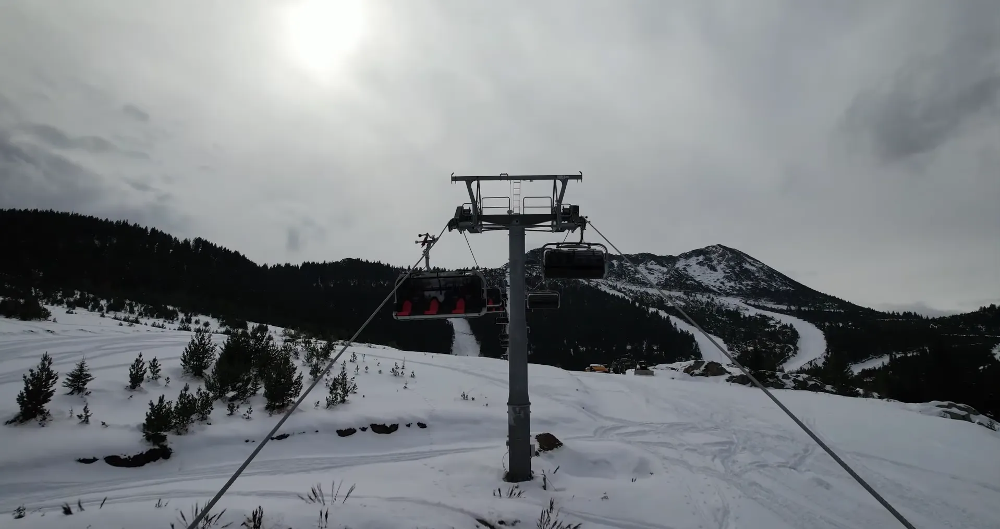
Ski lift
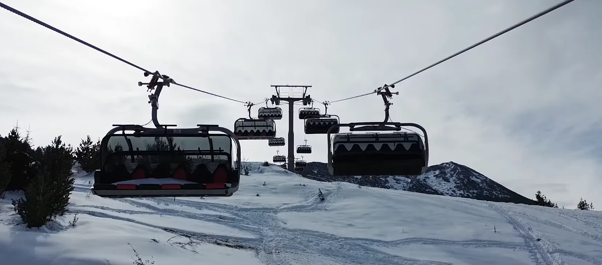
Panoramski lift
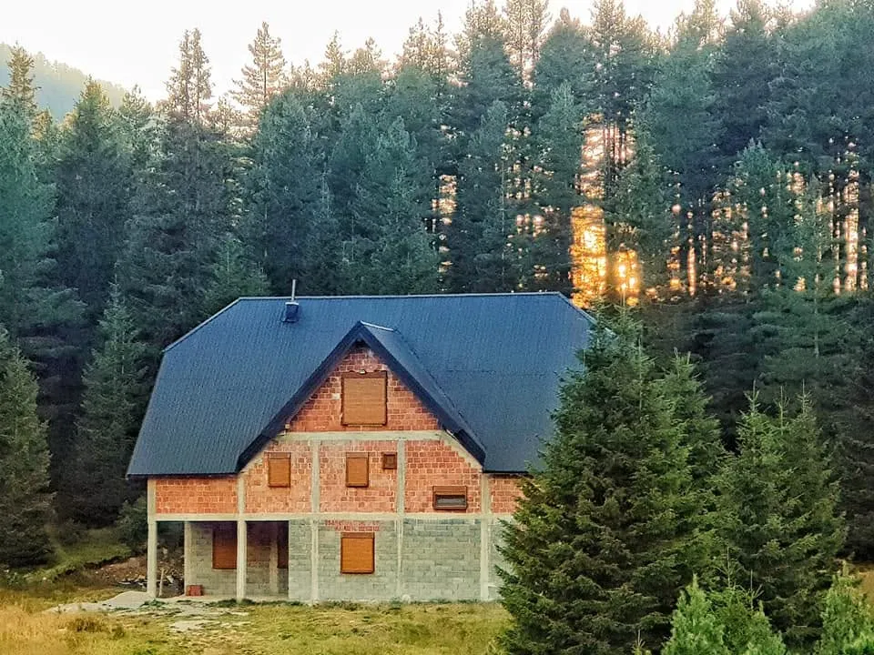
Planinska kućica